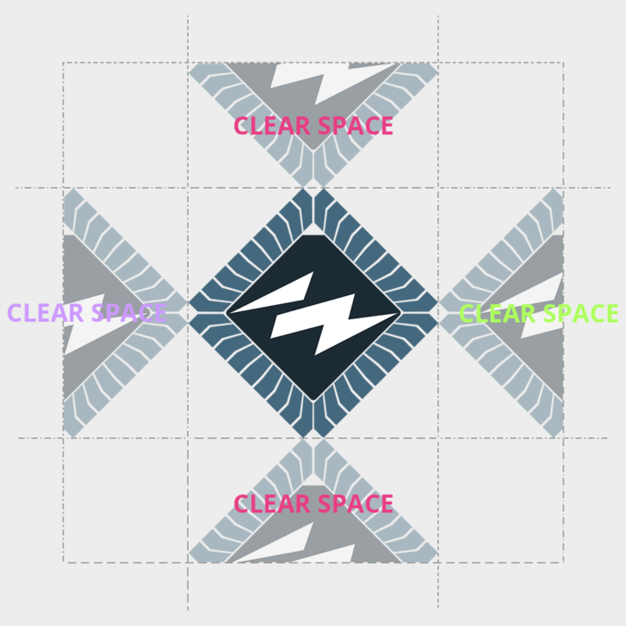

Sektionens logotyp är den du ser överst på den här sidan. Du finner den i en rad storlekar, varianter och format här på Github.
Logotypen kännetecknas av bokstäverna I och N utförda som två delar av en horisontell blixt, inneslutna i en 45 grader vinklad kvadrat som föreställer ett stiliserat mikrochip.
Mikrochipets ben har färgen kiselblå (#44687D), och centrum har en mörkare ton av samma färg (#262D33). Blixen är vit (#FFFFFF).
I de fall där den officiella logotypen inte kan återges med korrekta färger finns två enfärgade varianter att tillgå, en vit och en svart.
I de enfärgade versionerna har mikrochipets ben samma färg som blixten, medan centrum saknar färg. Dessa används till exempel för utskrifter, tryck på kläder, eller affischer.
Sektionens logotyp får inte brytas isär, och den flerfärgade logotypen får inte färgsättas på annat sätt eller med andra färger än de ovan definierade.
Den monokroma logotypen får färgsättas i andra färger än de ovan angivna, förutsatt att hela logotypen har samma färg.
För affischer och dylikt skall logotypen vara placerad i ett av affischens hörn, i enlighet med de framtagna mallarna och rådande proportioner.
Om logotypen används tillsammans med THS logotyp placeras den i det motsatta övre hörnet.
Använd de monokroma logotyperna om den flerfärgade logotypen syns dåligt mot en bakgrund. Vid användning av de monokroma logotyperna ska den vita logotypen användas om bakgrunden är mörk, och den svarta om bakgrunden är ljus.
Avståndet till andra element bör vara minst hälften av den egna bredden, på alla sidor.

IN-sektionen använder sig primärt av typsnittet Open Sans för digitala och fysiska medier.
IN-sektionens sektionsfärg är Kiselblå, färgen definieras:
RGB/hex: #44687D
NCS: S 4030-B
CMYK: 45.6, 16.8, 0, 50.98
PMS: 5405 C
Lab: 42.2, -6.8, -15.7
Civilingenjör Informationsteknik: laserviolett
RGB/hex: #CC99FF
Civilingenjör Mikroelektronik: limegrönt
RGB/hex: #ADFF5C
Högskoleingenjör Elektronik och datorteknik: vitt
RGB/hex: #FFFFFF
Högskoleingenjör Datateknik: rosa (cerise)
RGB/hex: #E83D84
Kandidatutbildning Informations och kommunikationsteknik: laserviolett
RGB/hex: #CC99FF